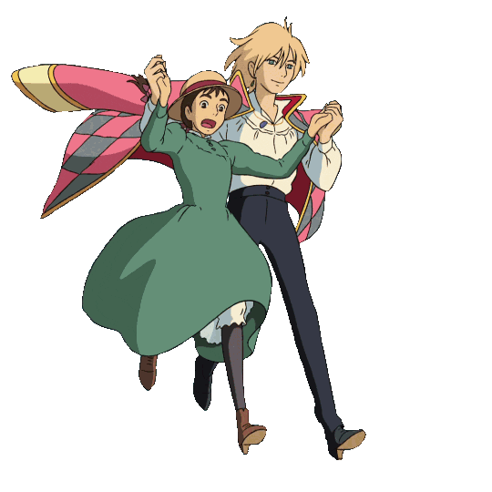
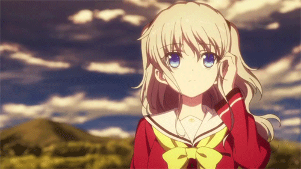
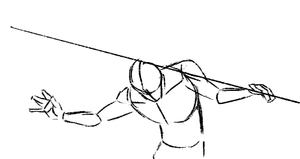
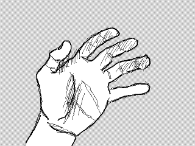
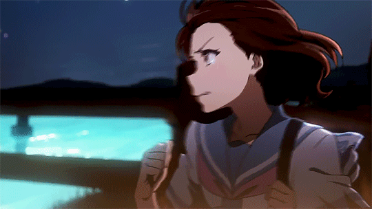

Anime or Japanese Animation

For example, the large eyes of anime characters are commonly perceived in Japan as multifaceted
“windows to the soul.” Much of the genre is aimed at children, but anime films are sometimes marked by
adult themes and subject matter. Modern anime began in 1956 and found lasting success in 1961 with the
establishment of Mushi Productions by Osamu Tezuka, a leading figure in modern manga, the dense,
novelistic Japanese comic book style that contributed greatly to the aesthetic of anime. Anime such
as Miyazaki Hayao’s Princess Mononoke (1997) are the modern equivalent of the epic folk adventures
once filmed by Japanese masters such as Mizoguchi Kenji and Kurosawa Akira.
How to make Anime
Getting the Green Light
Every anime has to start with a story idea. There are three main sources of story for anime: manga,
light novels, and original scripts. Obviously, story ideas can come from anywhere, but popular manga and
books in Japan make a lot of sense to use since they already have a fanbase.
The Pre-production Phase
“Pre-production” is the phase of the project before anyone has actually started making the show. All film and television
projects have a pre-production phase; the length of this can vary widely, based on several factors such as how big the project
is going to be, how much money is needed, and so on.

The director plays an important role in this. He or she will be part of pre-production because they have
the say when it comes to hiring the rest of production crew. Just as in Hollywood, to fill key positions
directors will hire people they trust and have worked with before. Directors are the creative head of the
project; not the business head. So they have to work with the budgets and deadlines agreed upon with
the producers.
A Word on Animation
In case you didn’t know, animation works by quickly flipping through drawings of different phases of
motion in order to create the illusion of actual motion. Film works the same way, but each “frame”
is a photograph rather than a drawing. I’m just mentioning it, because keeping the nature of animation in mind will allow the next phases
to make more sense.
Storyboards
The script describes the story in terms of scenes and dialogue, but it’s not a visual representation. The
director needs to turn the script into a visual guide in order to communicate to the animators exactly what
he wants.That’s where a “storyboard” comes in. This is a set of rough sketches that detail what is meant
to happen in each scene. It also shows what scene layouts should look like and so on. There may also be
concept art if the story doesn’t already have visual design,as a manga would.

Creating Layout
Since this is animation, there’s no actual “camera” filming scenes. Instead, “layouts” are created from
the storyboard that show what the background and perspective should look like, where cuts will happen,
and how the “camera” will move. Layout design is where animation production really begins.
Key Animation
The layouts are given to the key animators. They will create the high-quality key frames. That is, the
first and last frame of any smooth motion on screen, such as someone turning their head, pulling back for
a punch, changing facial expression, and so on.
In Between Artists
The unenviable job of drawing all those frames goes to another type of animator called an “in-between” artist. As you’ve probably figured out,
this person draws all the frames between the key frames. Luckily they don’t have to draw every single frame for every second of footage.
Drawing a separate cel for every single frame in a given second is referred to as “animating on ones” in the industry. That sort of fluid motion
is only reserved for big budget productions or for specific scenes (such as fights) that justify the extra effort. Most of the time, a show will
be animated on “twos” or even “threes”. In other words, only every second or third frame is is animated.
 
Going Digital
These days, regardless of how animation starts it inevitably ends up as digital media. Once the animation teams are done, everything needs to
be colored. The colored cels are put against the backgrounds as per the layouts. In modern anime this is also where CG elements are added.
Now everything must be filmed together as a composite to create the final video.
After Animation Ends
Anime aren’t silent movies! This means there’s still quite a lot to do. The voice artists need to breathe
life into the characters, so final or near final animation is sent to the dubbing studio where voice tracks
can be created. We still also need things like ambient sound, sound effects, music, and any other audio
work such as mixing and mastering to be done.
After all this work, your episode is basically ready to ship out, and then you get to start the whole
process all over again!

For the Sake of Accuracy
I hope it’s clear that these are just the broad strokes of anime production. There’s a lot
more fine detail that there simply isn’t space enough here to go through. This is also a sort
of naive order and clinical description. In real life, anime projects can be chaotic and follow
their own weird order and schedule. So don’t think of this as a recipe for making anime, but
rather a list of main ingredients. Each studio will bake their anime in a different way.
Making anime is largely a thankless job. Japanese animators get paid very little and have to work brutal hours; yet they possess amazing
artistic talent. This is not a career you get into to make a ton of money. It’s an art driven by passion, and knowing how this particular
sausage is made helps us appreciate it even more.